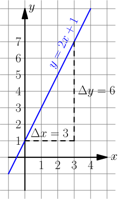

Derivatives¶
Derivatives are one of my favorite things in math. At first they seem like calculating their values will be quite complicated, but it turns out to be surprisingly easy.
Derivatives are also not useless gibberish isolated from real life. There's a practical demonstration game at the end of the chapter, and we can use them in surprisingly many places like implementing our own sin function. If you have no idea what sin is that's not a problem, and you don't need it for learning derivatives.
This chapter starts with some boring stuff, but we need it for fun stuff. Try to read patiently.
Limits¶
Things like $\frac{2x}{x}$ seem to be $2$ with any $x$. But there's one exception: if $x=0$, then $\frac{2x}{x}$ is $\frac 0 0$ and thus not defined.
>>> 2*123/123
2.0
>>> 2*0/0
Traceback (most recent call last):
File "<stdin>", line 1, in <module>
ZeroDivisionError: division by zero
>>> 2*0.00000001/0.00000001
2.0
>>> 2*(-0.00000001)/(-0.00000001)
2.0
No matter how near zero $x$ is we get 2, even if $x$ is negative. In these cases, mathematicians say that $\displaystyle\lim_{x \to 0} \textstyle\frac{2x}{x}=2$. Here lim means that we take the limit as $x$ goes to 0. We get $\frac 0 0$ if we try to do $\frac{2 \cdot 0}{0}$, but the limit still exists.
The limit does not exist if we get something like $\frac 1 0$ or $\frac 2 0$ as opposed to $\frac 0 0$. See this video for a really nice example that also shows why.
We can also do things like this:
$$\begin{align}\lim_{x\to0} \left(1+\frac{2x}{x} + \frac{3x}{x}\right) = 1 + \left(\lim_{x\to0}\frac{2x}{x}\right) + \left(\lim_{x\to0}\frac{3x}{x}\right) = 1 + 2 + 3\end{align}$$I won't list all the things we can do to limits and why because the rules are quite straight-forward and the why part is boring.
Slopes¶
A difference means how much a value changes. For example, if the value of $x$
is first 5 and then we change it to 6, $x$ changes by $\Delta x = 1$. Here
$\Delta$ is the Greek delta letter, so if someone's code has a variable named
deltax it means this.
Let's draw a graph of something like $y = 2x+1$:

For example, at $x=3$ we know that $y = 2x+1 = 2 \cdot 3 + 1 = 7$.
Let's calculate the slope of this line:
$$\begin{align}\frac{\Delta y}{\Delta x} = \frac{6}{3} = 2\end{align}$$The bigger the slope, the faster the line goes up, so the slope describes the "growing speed" or "changing speed". I used the $(x,y)$ points $(1,0)$ and $(3,7)$ when calculating the slope, but you should get the same slope with any pair of points chosen from the line because the height grows at the same speed everywhere.
What is a derivative?¶

What if we could extend this slope thing to curvy graphs? At first sight it might seem like we won't get a useful growing speed out of this because we get different slopes depending on which points we choose as shown in the image at right.
But what if we try to get the growing speed at some specific point, like $\displaystyle\lim_{\Delta x \to 0} \textstyle\frac{\Delta y}{\Delta x}$ instead of a plain $\frac{\Delta y}{\Delta x}$? Let's see what we get from a $y=f(x)$ graph where $f$ is a function:

Based on the image, if we take the length of the vertical $f(x+\Delta x)$ line and take off the length of the $f(x)$ line, we're left with just $\Delta y$. So $\Delta y = f(x+\Delta x)-f(x)$:
$$\begin{align}\lim_{\Delta x \to 0}\frac{\Delta y}{\Delta x} = \lim_{\Delta x \to 0}\frac{f(x+\Delta x)-f(x)}{\Delta x} = \lim_{h\to0} \frac{f(x+h)-f(x)}{h}\end{align}$$I finished by replacing $\Delta x$ with $h$ because $h$ is easier and faster to write than $\Delta x$.
This "growing speed at x" value is known as the derivative of $f$. Sometimes the derivative doesn't exist, but most functions you'll come across have the derivative. Click here if you want to know more.
At this point you're probably feeling like this is just some theorethical gibberish that has nothing to do with real life, but that's not the case. Keep reading.
The graph $y=x^2$ is a parabola. Let's find the derivative of $x^2$ by plugging in $f(x)=x^2$ to the lim thing we ended up with:
Handy thing: $(x+h)^2=x^2+2xh+h^2$
Proof:
$$\begin{align}& \ (x+h)^2 \\ =&\ (x+h)(x+h) \\ =&\ (x+h)x+(x+h)h \\ =&\ xx+hx+xh+hh \\ =&\ x^2+2xh+h^2\end{align}$$I think this is cool. We started with a complicated-looking thing but finally we arrived at just $2x$. What's more, the $2x$ is not just a random value we got out of a spooky calculation; for example, at $x=2$ the derivative is $2 \cdot 2 = 4$, so if we draw a straight line that barely touches $y=x^2$ at $x=2$ its slope will also be 4 like in the image at right.
You can also find the derivative of the $y=2x+1$ example we looked at earlier, and turns out that it's 2, just like the slope was. This makes sense because derivatives are like slopes but they also work with curvy things, and there's no difference between a slope and a derivative of a straight line.
The derivative $\displaystyle\lim_{\Delta x\to0} \textstyle\frac{\Delta y}{\Delta x}$ is often written as $\frac{dy}{dx}$. Historically $dy$ and $dx$ were infinitely tiny changes of $y$ and $x$, but nowadays limits are preferred over "infinitely small numbers".
It's also common to write $\frac{d}{dx} y$ instead of $\frac{dy}{dx}$, although it doesn't make much sense because $dy$ doesn't mean $d$ times $y$. Another common style is to put a single quote after a function name, like $f'(x) = \frac{d}{dx} f(x)$.
Sometimes programmers write dy when they really mean deltay.
It doesn't really make sense either, but dy is much less typing
than deltay.
Faster!¶
Let's say that you want to calculate something like this:
$$\begin{align}\frac{d}{dx} (6x^2+7x-123)\end{align}$$That would be a horribly complicated calculation with the $\lim$ thing. Let's be a bit more clever.
We have a bunch of things with $+$ and $-$ in between, so maybe we could deal with them somehow? Let's say that we want to find the derivative of $f(x)+g(x)$ where $f$ and $g$ can be any functions (as long as the derivative exists). They could be for example $f(x)=6x^2$ and $g(x)=7x-123$, but let's see what we get if we don't plug in any values:
$$\begin{align}\frac{d}{dx}(f(x)+g(x)) &= \lim_{h\to0} \frac{\bigl(f(x+h)+g(x+h)\bigr)-\bigl(f(x)+g(x)\bigr)}{h} \\ &= \lim_{h\to0} \frac{f(x+h)+g(x+h)-f(x)-g(x)}{h} \\ &= \lim_{h\to0} \frac{f(x+h)-f(x)+g(x+h)-g(x)}{h} \\ &= \lim_{h\to0} \left( \frac{f(x+h)-f(x)}{h} + \frac{g(x+h)-g(x)}{h} \right) \\ &= \left(\lim_{h\to0}\frac{f(x+h)-f(x)}{h}\right) + \left(\lim_{h\to0}\frac{g(x+h)-g(x)}{h}\right) \\ &= \frac{d}{dx} f(x) + \frac{d}{dx} g(x)\end{align}$$That's quite nice! So if we want to find the derivative of a bunch of things added together we can just find derivatives of each thing one by one. The same thing also works with $-$ instead of $+$·
We can actually take a step further and find the derivative of $c\ f(x)$ where $c$ is any constant, e.g. $6$:
$$\begin{align}\frac{d}{dx}(c\ f(x)) &= \lim_{h\to0} \frac{c\ f(x+h) - c\ f(x)}{h} \\ &= \lim_{h\to0} \frac{c \cdot (f(x+h)-f(x))}{h} \\ &= \lim_{h\to0} \left( c\ \frac{f(x+h)-f(x)}{h} \right) \\ &= c \cdot \lim_{h\to0} \frac{f(x+h)-f(x)}{h} \\ &= c \cdot \frac{d}{dx} f(x)\end{align}$$We need a couple more things: $\frac{d}{dx}x=1$ because $\displaystyle\lim_{\Delta x \to 0} \textstyle\frac{\Delta x}{\Delta x}=1$, and $\frac{d}{dx} c = 0$ because $c$ never changes regardless of the value of $x$ and $\Delta c = 0$. You can also use the definition of derivative to show that these work.
So, with all that we can calculate the derivative easily:
$$\begin{align}& \frac{d}{dx} (6x^2+7x-123) \\ =& \frac{d}{dx}(6x^2) + \frac{d}{dx}(7x) - \frac{d}{dx}(123) \\ =& 6 \cdot \frac{d}{dx}(x^2) + 7 \cdot \frac{d}{dx} x - 0 \\ =& 6 \cdot 2x + 7 \cdot 1 \\ =& 12x + 7\end{align}$$See Also
The summary page has a derivative section with many more rules. You may need them if you want to find derivatives of different functions than the functions in this chapter.
You can also use a nice symbolic calculation library, like Python's sympy (can be installed with pip):
>>> from sympy import *
>>> init_printing()
>>> x = Symbol('x')
>>> diff(x**2, x)
2⋅x
>>> diff(6 * x**2 + 7*x - 123, x)
12⋅x + 7
Here "diff" is short for "differentiate", and it means finding a derivative.
Libraries like sympy are also useful for doing long and messy calculations like the one we did above:
>>> def f(x):
... return x**2
...
>>> h = Symbol('h')
>>> (f(x+h)-f(x))/h
2 2
- x + (h + x)
───────────────
h
>>> simplify((f(x+h)-f(x))/h)
h + 2⋅x
Example: Smooth Jumps¶
Let's say you're making a game where a player can jump over something. If the player moves right at a steady speed, which of these jumps looks best?

The answer is obvious – the rightmost jump looks best. It's time to figure out how to make games with jumps like that.
Let's say that $t$ is time and $h$ is the height of our player, so we get this graph:

This graph looks like a parabola, so its equation is $h=at^2+bt+c$ where $a$, $b$ and $c$ are constants. The changing speed of height is the falling speed. Let's call that $v$ like velocity.
$$\begin{align}v = \frac{dh}{dt} = \frac{d}{dt} (at^2+bt+c) = 2at+b\end{align}$$On the other hand, the changing speed of velocity is the acceleration caused by gravity. Let's call that $g$.
$$\begin{align}g = \frac{dv}{dt} = \frac{d}{dt} (2at+b) = 2a\end{align}$$Note how the $t$ disappeared and we're left with just the constant $2a$. This makes sense because the gravity is always the same, no matter what time it is.
This Python program...
height = 0
velocity = 10
gravity = 2
while height >= 0:
print(' '*height + 'O')
height += velocity
velocity -= gravity
...prints this awesome parabola:
O
O
O
O
O
O
O
O
O
O
O
O
You can use similar code for doing jumps in games. Here's a demo created with my canvaswrapper.js script. Click it and use arrow keys to move the ball.
Here's the code:
var screen = new CanvasWrapper('canvas1');
const GRAVITY = 1.5;
var ball = {
x: screen.width/2, // centered
height: 0, // distance from bottom of screen to ball's bottom
velocity: 0, // positive means up
velocityMax: 30, // velocity immediately after a jump
sidewayMovement: 0, // -1 is left, +1 right
sidewaySpeed: 10,
radius: 30,
};
runRepeatedly(function() {
screen.fill('black');
screen.drawCircle(ball.x, screen.height-ball.height-ball.radius,
ball.radius, 'white');
ball.x += ball.sidewayMovement * ball.sidewaySpeed;
ball.height += ball.velocity;
ball.velocity -= GRAVITY;
if (ball.height < 0) {
// ball hits the ground
ball.height = 0;
ball.velocity = 0;
}
screen.getEvents().forEach(evt => {
if (evt.type == 'keydown') {
if (evt.key == 'ArrowLeft') {
ball.sidewayMovement = -1;
} else if (evt.key == 'ArrowRight') {
ball.sidewayMovement = 1;
} else if (evt.key == 'ArrowUp') {
ball.velocity = ball.velocityMax;
}
} else if (evt.type == 'keyup' && (
(evt.key == 'ArrowLeft' && ball.sidewayMovement == -1) ||
(evt.key == 'ArrowRight' && ball.sidewayMovement == 1))) {
// cancel the previous ArrowLeft or ArrowRight press
ball.sidewayMovement = 0;
}
});
});